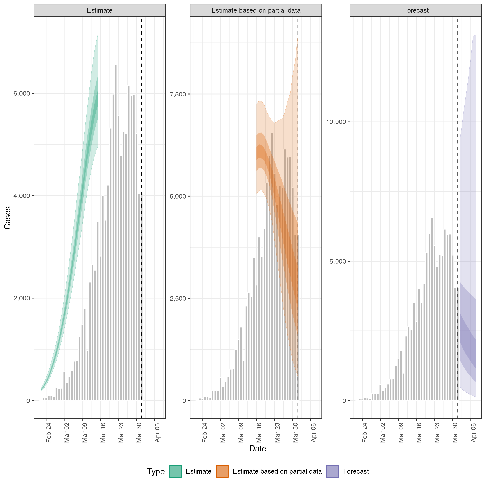
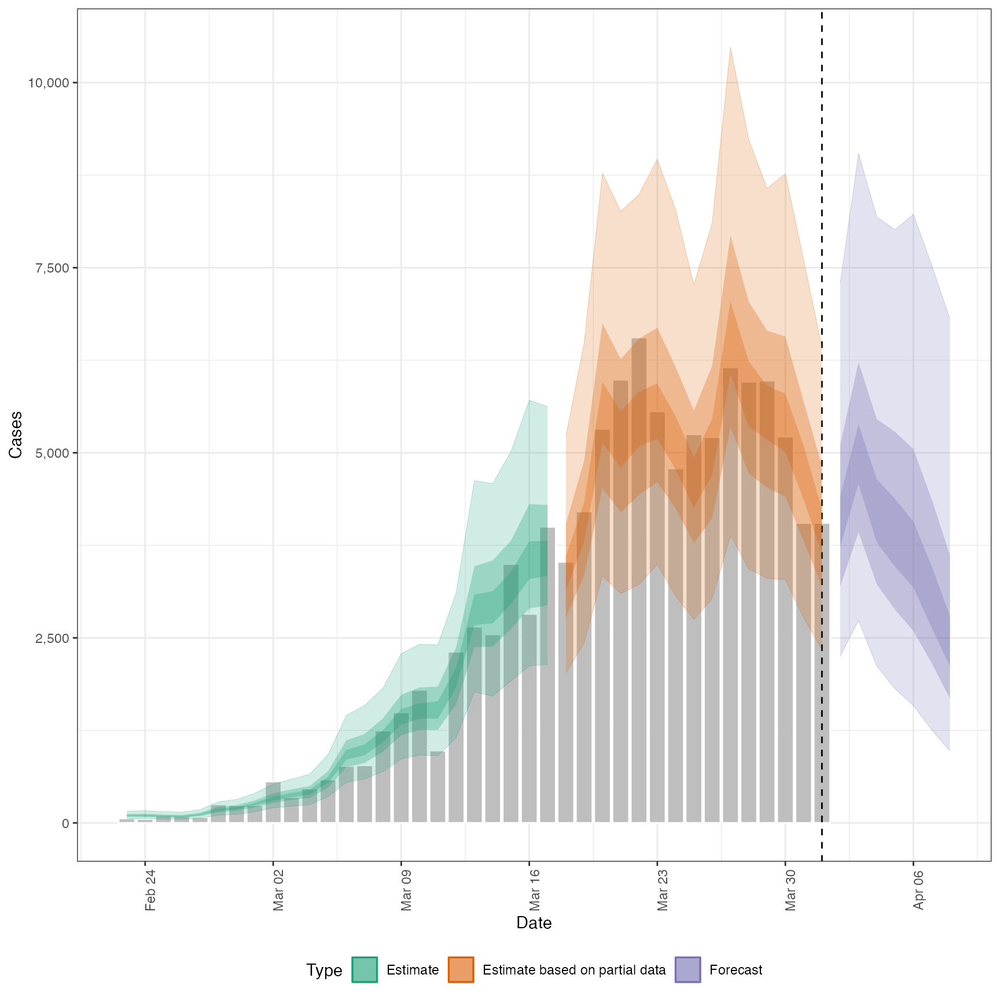
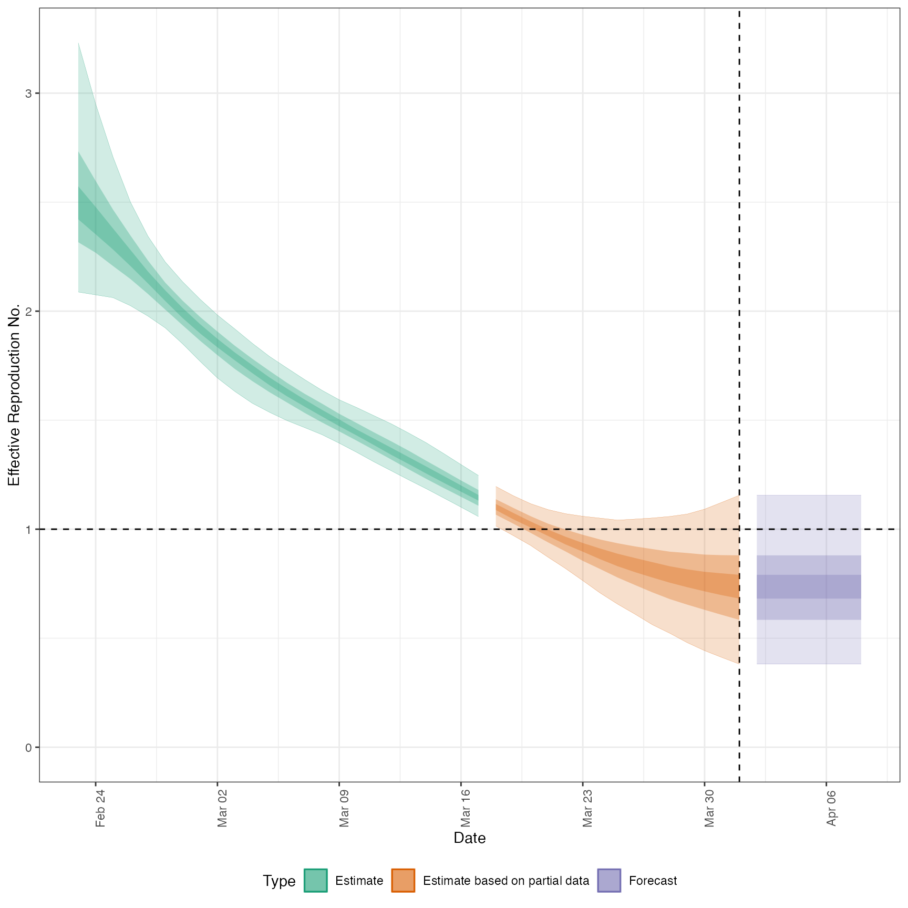
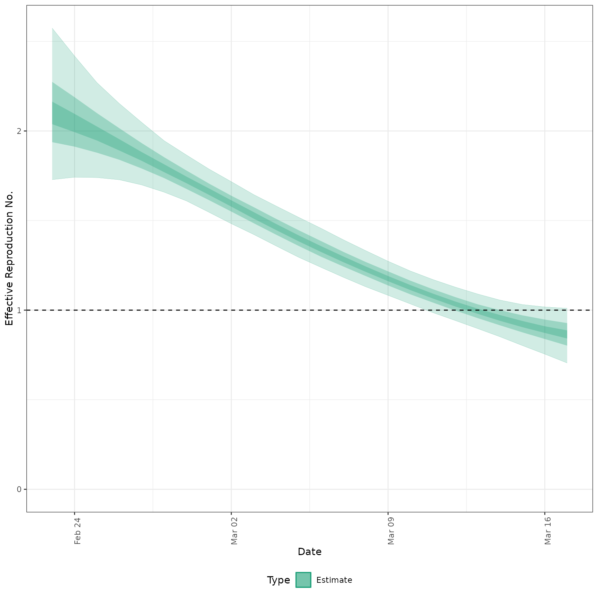

![[Questioning]](figures/lifecycle-questioning.svg) Allows users to plot the output from
Allows users to plot the output from estimate_infections easily. In future releases it
may be depreciated in favour of increasing the functionality of the S3 plot methods.
Usage
plot_estimates(
estimate,
reported,
ylab = "Cases",
hline,
obs_as_col = TRUE,
max_plot = 10,
estimate_type = NULL
)Arguments
- estimate
A data.table of estimates containing the following variables: date, type (must contain "estimate", "estimate based on partial data" and optionally "forecast"),
- reported
A data.table of reported cases with the following variables: date, confirm.
- ylab
Character string, defaulting to "Cases". Title for the plot y axis.
- hline
Numeric, if supplied gives the horizontal intercept for a indicator line.
- obs_as_col
Logical, defaults to
TRUE. Should observed data, if supplied, be plotted using columns or as points (linked using a line).- max_plot
Numeric, defaults to 10. A multiplicative upper bound on the number of cases shown on the plot. Based on the maximum number of reported cases.
- estimate_type
Character vector indicating the type of data to plot. Default to all types with supported options being: "Estimate", "Estimate based on partial data", and "Forecast".
Examples
# \donttest{
# define example cases
cases <- example_confirmed[1:40]
# set up example delays
generation_time <- get_generation_time(disease = "SARS-CoV-2", source = "ganyani")
incubation_period <- get_incubation_period(disease = "SARS-CoV-2", source = "lauer")
reporting_delay <- estimate_delay(rlnorm(100, log(6), 1), max_value = 10)
# run model
out <- estimate_infections(cases,
generation_time = generation_time,
delays = delay_opts(incubation_period, reporting_delay)
)
#> Warning: There were 9 divergent transitions after warmup. See
#> https://mc-stan.org/misc/warnings.html#divergent-transitions-after-warmup
#> to find out why this is a problem and how to eliminate them.
#> Warning: Examine the pairs() plot to diagnose sampling problems
# plot infections
plot_estimates(
estimate = out$summarised[variable == "infections"],
reported = cases,
ylab = "Cases", max_plot = 2
) + ggplot2::facet_wrap(~type, scales = "free_y")

# plot reported cases estimated via Rt
plot_estimates(
estimate = out$summarised[variable == "reported_cases"],
reported = cases,
ylab = "Cases"
)

# plot Rt estimates
plot_estimates(
estimate = out$summarised[variable == "R"],
ylab = "Effective Reproduction No.",
hline = 1
)

#' # plot Rt estimates without forecasts
plot_estimates(
estimate = out$summarised[variable == "R"],
ylab = "Effective Reproduction No.",
hline = 1, estimate_type = "Estimate"
)

# }